R Mini Course
Course developed by Mike McCann (2015) and Ben Weinstein (2014)
Nicole Kinlock
January 19th and 20th, 2017
Directory
- Part 1: Basics of R
- Part 2: Probability
- Part 3: Data manipulation
- Part 4: Looping and vectorization
- Part 5: Functions
- Part 6: Data visualization using ggplot2
Part 1: Basics of R
Back to the directory
Introduction to R
- Statistical programming language and environment
- Available as public domain software (i.e. not copyrighted)
- Free!
- Better than most commercial alternatives
- Available on all platforms (Windows, OSX, Linux)
- Not just for statistics, but also general purpose programming

Why use R?
- Flexible
- Transparent
- Large user base
- Valued skill (Remember, R is a programming language)
RStudio
- Integrated development environment (IDE) for the R language
- AKA use R with a nice, shiny interface
- Also free!
- Using R without RStudio feels kind of like using only Command (Windows) or Terminal (Mac) on your computer

Running R with RStudio
- The screen is split four ways:
- Workspace: (Top left) Where scripts are written & saved
- Console: (Bottom left) Where commands are run
- Environment, History: (Top right) Where objects are stored
- Files, Plots, Packages, and Help: (Bottom right) View data, help
Running R with RStudio
Type directly into the console (best when you don't want to save the code) or type into the script - then type
(CTRL + ENTER)(Windows) or(CMD + ENTER)(Mac)A script is a plain text file with R commands in it. This will be where you save the code that you are writing - the file will end in the extension .R
R as a calculator
R has many arithmetic operators
+Addition-Subtraction*Multiplication/Division^Exponentiation%%Modulus (finds remainder)%/%Integer division (leaves off remainder)
R obeys the standard order of operations
R as a calculator
Examples
7 + 4
## [1] 11
3^2
## [1] 9
10 %% 7
## [1] 3
R is logical
- R also has many logical operators
<Less than<=Less than or equal to>Greater than>=Greater than or equal to==Exactly equal to!=Not equal to!NOT|OR&AND
R is logical
Examples
7 == 4
## [1] FALSE
3 > 2
## [1] TRUE
7 != 4
## [1] TRUE
Try It!
What is 21 multiplied by 342?
What is 15 to the fourth power?
Is 8 to the fifth power equal to the sum of 692 and 7500 multiplied by 4?
Creating Objects
An object is the fundamental unit in R. All expressions can be saved as an object.
To create an object from an expression we use the assignment operator (
<-). The assignment operator assigns values on the right to objects on the left.
a <- (12 + 180) * 3
a
## [1] 576
- The object
ais now the output of the expression(12 + 180) * 3. Check your environment (upper right panel)
Assignment operator
Do not use
a = 12 + 180for assignment in R. It's best practice to use<-intead of=.This may seem arbitrary, but it is helpful when you are reading someone else's code.
R Tip: Comment on your code
Use # signs to comment on your script. Anything to the right of a # is ignored. Good scripts (and homework) have comments before every major block of code. It's surprisingly hard to remember what you did when reviewing older code without comments, and it's particularly important when other people are reading your code.
5 + 5 # this adds five and five
## [1] 10
# 10 + 10 this does not add ten and ten
Expressions using objects
- Objects can be combined into other, larger, and more complex objects.
a <- 8 * 10
b <- 2 * 10
d <- a * b
d
## [1] 1600
# This is equivalent to:
d <- 8 * 10 * 2 * 10
d
## [1] 1600
Try It!
- Create an object that is equal to your age. Create another object that is equal to the age of the person to your right. Find the difference between these objects.
Data structures: 1. Vectors
- R has five common data structures. We will start with the simplest: vectors.
- Vectors are one dimensional strings of numbers or characters. Vectors come in four types: numeric, integer, logical (TRUE or FALSE), and character. A vector is made using the combine function,
c().
Data structures: 1. Vectors
Combining integers and numbers into vectors
a <- c(3, 4, 5)
a
## [1] 3 4 5
b <- c(3.24, 4.57, 5.03)
b
## [1] 3.24 4.57 5.03
Data structures: 1. Vectors
Combining characters into vectors
- Characters in R need to be enclosed in quotation marks.
pets <- c("dog", "cat", "bird")
pets
## [1] "dog" "cat" "bird"
Data structures: 1. Vectors
Combining multiple objects into a single, new vector
# Make objects
a <- sqrt(4 * 7)
b <- 6 * 5
g <- 9 * 2
# Combine
d <- c(a, b, g)
d
## [1] 5.291503 30.000000 18.000000
Data structures: 1. Vectors
Vectors of regular sequences
- You can use a colon (:) to create a vector that includes all integers in between the numbers on either side of the colon
x <- 1:10
x
## [1] 1 2 3 4 5 6 7 8 9 10
- You can use
seq(from = , to = , by = )to create a vector with a set min and max (from, to) with a specified increment (by)
x <- seq(from = 1, to = 20, by = 2)
x
## [1] 1 3 5 7 9 11 13 15 17 19
Try It!
- Create a vector that includes all integers between 5 and 25. Name this vector
x. - Create a vector that includes all even integers between 2 and 22. Name this vector
y. - Create a single vector that combines object x and object y. Name this vector
z.
Data structures: 1. Vectors
Vector indexing: positional
- You can access any element in the vector by putting its position in square brackets
[ ]
# create a vector
height <- c(76, 72, 74, 74, 78)
height
## [1] 76 72 74 74 78
height[1] # extract the 1st element in the vector
## [1] 76
height[5] # extract the 5th element
## [1] 78
Data structures: 1. Vectors
Vector indexing: positional
- You can also use vector indexing to return the same vector with certain elements missing using the - symbol
height <- c(76, 72, 74, 74, 78)
height[-1]
## [1] 72 74 74 78
Data structures: 1. Vectors
Vector indexing: named
- You can assign names to each element of the vector, and then extract the element by indexing based on the name.
# Create a vector with named elements
temp <- c(monday = 28.1, tuesday = 28.5, wednesday = 29.0, thursday = 30.1, friday = 30.2)
temp
## monday tuesday wednesday thursday friday
## 28.1 28.5 29.0 30.1 30.2
temp["wednesday"]
## wednesday
## 29
temp[3]
## wednesday
## 29
Data structures: 1. Vectors
Vector indexing: logical
- You can extract elements in a vector that meet specific criteria based on a logical expression.
y <- 5:50
y
## [1] 5 6 7 8 9 10 11 12 13 14 15 16 17 18 19 20 21 22 23 24 25 26 27
## [24] 28 29 30 31 32 33 34 35 36 37 38 39 40 41 42 43 44 45 46 47 48 49 50
y[y <= 10] # extract all elements less than or equal to 10
## [1] 5 6 7 8 9 10
y[y < 10 & y != 5] # extract all elements less than 10 that are not equal to 5
## [1] 6 7 8 9
Try It!
What are the 9th and 12th positions of the vector
seq(1, 27, 0.5)?Bonus! Can you find those positions simultaneously?
Create the vector
c(5:40)and name itm. Extract all elements ofmthat are greater than or equal to 22.
Functions
A function is a stored object that performs a task given some inputs (called arguments). R has many functions already available, but you can also write your own functions.
Try using the tab key while entering arguments in any function to discover a useful feature of RStudio. (Try now with the
seq()function.)Functions are called in the format:
NameOfFunction(inputs)The output of a function can be saved to an object:
output <- NameOfFunction(inputs)
Functions
- It's not necessary to explicitly name arguments, but it's helpful when learning the language.
seq(1, 10, 1)
## [1] 1 2 3 4 5 6 7 8 9 10
seq(from = 1, to = 10, by = 1)
## [1] 1 2 3 4 5 6 7 8 9 10
Functions
- Use
sum()to take the sum of all elements in a vector:
sum(c(3, 4, 5))
## [1] 12
- Use
mean()to take the mean of all elements in a vector:
mean(seq(5, 100, 5))
## [1] 52.5
Functions
- Functions can act on an object
x <- seq(5, 100, 5)
# use the vector x as the input to the function
mean(x)
## [1] 52.5
R Tip: The help system
- Help files provide important information on what the function does, how it works, and they provide examples at the very bottom.
help(mean)
- You can also use
?before a function name to view the help file
?mean # Same as help(mean)
- Use
??to search for functions; e.g. search for any function whose help files contain the word"robust"
??robust
Try It!
What is the median of 26, 24, 8, 17, and 42?
Remember: functions are often named intuitively.What does the function
range()do, and what is the sample example in the help file?Is
mean(4, 5)different thanmean(c(4, 5))?
Packages
We will be exploring functions in much greater detail throughout this course. (Including writing your own functions!)
Functions are kept inside packages, some of which come pre-installed with R. Others must be downloaded.
Packages
There are many, many R packages - currently 7742!
Check the List of R Packages and search with your favorite keyword, e.g. ecology, paleo, dispersal, population, time series, phylogeny, community, Bayes
Installing Packages
- Often you will need to install a package to access a certain library of functions.
# Install a new package
install.packages("igraph")
- Remember to surround the package name in quotation marks for the
install.packages()function.
Loading Packages
Installing a package downloads it to your computer. You need to download packages before loading them.
Additionally, you have to load packages before you use them every time you restart R. This lets R know what packages to load and not waste memory by loading all potential functions.
# two ways to load packages:
library(ggplot2)
require(ggplot2)
- Note: no quotation marks are needed for
library()orrequire()
R Tip: Loading Packages
Good scripts (and homeworks) have a series of
require()orlibrary()statements at the top of the script.Some say that you should preferentially use
library(). The logic behind this is becauserequire()"tries" to laod a package andlibrary()actually loads a package. If you userequire()at the top of the screen and you don't have the package installed, you'll get a failure message later on when you use functions in the package. However, if you uselibrary()at the top of the screen and you don't have the package installed, you'll get a failure message right away.
Try It!
Search and find an interesting package. What is it? What is one function included in the package?
Install the package to your computer.
The R User Community
Practice
Worksheets created by Mike McCann and hosted on his Rpubs site
Part 2: Probability & Distributions
Back to the directory
Review
What is the (sum of 1 through 10) multiplied by two?
What are the 12th and 45th positions of the vector
seq(1, 43, 0.25)?Find all of the elements of the vector
seq(1, 10, 0.1)that are less than 2. What is the median value of these elements?
Distributions
- It is often useful to generate a sample from a specific statisical distribution. To generate a sample of 1000 elements from a standard normal distribution (mean 0 and standard deviation 1) we can use the
rnorm()function.
norm <- rnorm(n = 1000, mean = 0, sd = 1) # create a vector of samples from a standard normal dist.
head(norm) # view the first six elements of the vector
## [1] 0.76000848 -0.37924614 0.06295452 1.64946492 1.29218106 0.06953762
hist(norm, col = "palevioletred", main = "", xlab = "", ylab = "Frequency") # plot the vector of samples as a histogram
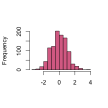
Try It!
Look up the
rnorm()function in help screen. Locate the three arguments we used.Draw 100 random numbers from a normal distribution with a mean of 3 and a std. dev. of 2, assign it to an object
a.Find the mean of your sample. How close was it to the true mean (that you set in
rnorm()?What is the 13th element in your vector
a?
Generating random samples from other distributions
- R has many distributions in the base package, including all those commonly used in biological analyses.
- Depending on the distribution, each function has its own set of parameter arguments.
- For example, the
rpois()function is the random number generator for the Poisson distribution and it has only the parameter lambda (\(\lambda\)). - Statistical distributions will be covered in much more detail in Biometry.
Try It!
Draw 100 random samples from a Poisson distribution with
lambda = 3, assign it to an objectw.Draw 1000 random samples from a Poisson distribution with
lambda = 3, assign it to an objecty.Calculate the means of both vectors. What is the difference in means?
Other properties of distributions
For each distribution, there are four functions which will generate fundamental quantities of a distribution. Let's consider the normal distribution as an example.
rnorm()a random sample from a normal distribution.dnorm()the probability density (or densities) for a specific value (or values) for a normal distribution.pnorm()the cumulative distribution function (area under the curve)qnorm()the quantile function (value x at which the CDF of the distribution is equal to p)
All will be covered during Biometry. See this website for a bit more information.
Univariate plots
Barplots
- Barplots are a basic type of univariate plot. The R function to create a barplot is
barplot().
# use the R dataset of the length of rivers in the United States (a univariate data set)
head(rivers)
## [1] 735 320 325 392 524 450
barplot(height = rivers[1:10], col = "paleturquoise", main = "Lengths of rivers in the United States", ylab = "Length (in miles)")
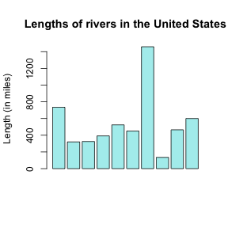
Univariate plots
Histograms
Histograms are also a common univariate plot. Histograms place data into "bins", and count the number (frequency) of data falling into each bin.
Bins are usually plotted as bars, with the x range on the x axis, and frequency on the y axis.
Univariate plots
Histograms
Histograms are an effective way of visualizing distributions
# generate and visualize 100 random samples from a standard normal distribution
sample <- rnorm(1000)
hist(sample, col = "palevioletred", main = "", xlab = "", ylab = "Frequency")
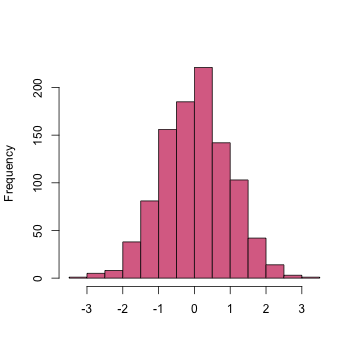
Try It!
Draw 10 random variates from a normal distribution and plot a histogram of the sample. Repeat for 100, then 1000 random variates. What do you notice about the histograms?
Explore at least one other distribution; look up
?distributions.Take a random sample of the new distribution, plot the sample, and share with your neighbor.
Draw 1000 random variates from a normal distribution with a mean of 0 and a sd of 1. Look at
?hist. How do you specify the size of the bin range? Try making bins from -4 to 4, with intervals of 0.01, 0.1, and 1. Hint: Consider usingseq()in the "breaks" argument withinhist().
Sampling
In R, it's very easy to take a random sample of elements in any vector with the
sample()function.Take a random sample of 20 elements from a vector of integers between 1 and 100.
x <- 1:100
sample(x, size = 20) # sample without replacement
## [1] 97 18 41 92 46 27 55 36 89 37 90 44 76 14 29 39 21 20 74 98
sample(x, size = 20, replace = TRUE) # sample with replacement
## [1] 6 84 69 90 13 10 33 7 25 39 15 62 24 22 36 68 64 46 49 35
Try It!
Sample 9 elements from a vector of integers between 125 and 325 without replacement.
Sample 5 letters (using the pre-installed vector
letters) from the alphabet with replacement.Sample 0 or 1 twelve times, with and without replacement. What happens?
Bivariate plots
Scatterplots
- Scatterplots are useful for showing the relationship between two variables
sample1 <- rnorm(n = 40, mean = 4, sd = 2) # random sample from a normal dist.
sample2 <- rnorm(n = 40, mean = 2, sd = 1) # random sample from a different normal dist.
plot(formula = sample2 ~ sample1, pch = 20)
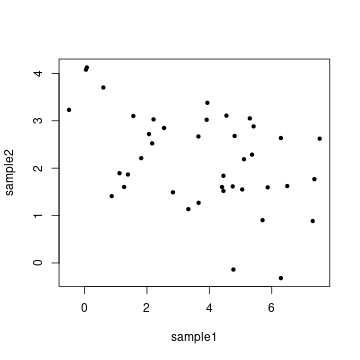
Bivariate plots
Scatterplots
- Instead of writing the relationship as a formula, i.e.
y ~ x, you can writeplot(x, y).
plot(x = sample1, y = sample2, pch = 20)
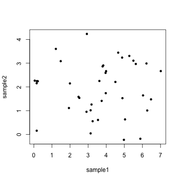
Bivariate plots
Scatterplots
- You can add straight lines to a plot with
abline(). a specifies the intercept and b the slope.
plot(sample1, sample2, pch = 20)
abline(a = -0.1, b = 1, col="royalblue4")
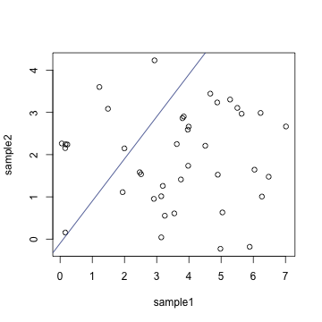
Bivariate plots
Scatterplots
Lines can also be model fits
lm()fits a linear relationship between x and y.
plot(sample1, sample2)
abline(lm(sample2 ~ sample1), col="royalblue")
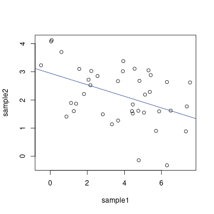
Lots of useful links for plotting
R Base Graphics: An Idiot's Guide
Producing Simple Graphs with R
More on plotting later (making plots that are much more visually appealing!)
Practice
Part 3: Data Manipulation
Back to the directory
Download the file for this section
Data structures: 2. Data frames
- Most data you've worked with probably isn't in vector form. More likely, it includes multiple rows and columns. Thus, a data frame is a very important data type in R and what you'll be working with much of the time.
head(trees) # pre-loaded dataset in R - measurements of black cherry trees
## Girth Height Volume
## 1 8.3 70 10.3
## 2 8.6 65 10.3
## 3 8.8 63 10.2
## 4 10.5 72 16.4
## 5 10.7 81 18.8
## 6 10.8 83 19.7
Data structures: 2. Data frames
Data frames are usually read in from a file, but R comes with many practice datasets.
We will use the iris dataset, famously used by R.A. Fisher in 1936

head(iris)
## Sepal.Length Sepal.Width Petal.Length Petal.Width Species
## 1 5.1 3.5 1.4 0.2 setosa
## 2 4.9 3.0 1.4 0.2 setosa
## 3 4.7 3.2 1.3 0.2 setosa
## 4 4.6 3.1 1.5 0.2 setosa
## 5 5.0 3.6 1.4 0.2 setosa
## 6 5.4 3.9 1.7 0.4 setosa
Data structures: 2. Data frames
Useful functions for data frames
head()- see first 6 rowstail()- see last 6 rowsdim()- dimensions (# rows, # columns)nrow()- number of rowsncol()- number of columnsstr()- structure of any object (very useful!)class()- class of any objectrownames()- row namescolnames()- column names
Try It!
How many rows does the
irisdata frame have?How many columns? What are the column names?
Using the
str()function, how many species are in the data?What are the classes of each of the columns?
Data structures: 2. Data frames
Data frame syntax and subsetting
- R has many powerful subset operators that will allow you to easily perform complex operations on any kind of dataset (much easier than with Excel!)
- Think of data frames as a series of vectors grouped together into a table
head(iris)
## Sepal.Length Sepal.Width Petal.Length Petal.Width Species
## 1 5.1 3.5 1.4 0.2 setosa
## 2 4.9 3.0 1.4 0.2 setosa
## 3 4.7 3.2 1.3 0.2 setosa
## 4 4.6 3.1 1.5 0.2 setosa
## 5 5.0 3.6 1.4 0.2 setosa
## 6 5.4 3.9 1.7 0.4 setosa
Data structures: 2. Data frames
Data frame indexing: positional
- Index individual elements of a data frame with
nameofdf[row#, column#]
iris[1, 1] # first row, first column
## [1] 5.1
iris[3, 3] # third row, third column
## [1] 1.3
Data structures: 2. Data frames
Data frame indexing: positional
- Index entire rows or columns by leaving one of the positions blank, i.e.
nameofdf[, column#]ornameofdf[row#, ]
iris[2, ] # subset the entire second row
## Sepal.Length Sepal.Width Petal.Length Petal.Width Species
## 2 4.9 3 1.4 0.2 setosa
iris[, 2] # subset the entire second column
## [1] 3.5 3.0 3.2 3.1 3.6 3.9 3.4 3.4 2.9 3.1 3.7 3.4 3.0 3.0 4.0 4.4 3.9
## [18] 3.5 3.8 3.8 3.4 3.7 3.6 3.3 3.4 3.0 3.4 3.5 3.4 3.2 3.1 3.4 4.1 4.2
## [35] 3.1 3.2 3.5 3.6 3.0 3.4 3.5 2.3 3.2 3.5 3.8 3.0 3.8 3.2 3.7 3.3 3.2
## [52] 3.2 3.1 2.3 2.8 2.8 3.3 2.4 2.9 2.7 2.0 3.0 2.2 2.9 2.9 3.1 3.0 2.7
## [69] 2.2 2.5 3.2 2.8 2.5 2.8 2.9 3.0 2.8 3.0 2.9 2.6 2.4 2.4 2.7 2.7 3.0
## [86] 3.4 3.1 2.3 3.0 2.5 2.6 3.0 2.6 2.3 2.7 3.0 2.9 2.9 2.5 2.8 3.3 2.7
## [103] 3.0 2.9 3.0 3.0 2.5 2.9 2.5 3.6 3.2 2.7 3.0 2.5 2.8 3.2 3.0 3.8 2.6
## [120] 2.2 3.2 2.8 2.8 2.7 3.3 3.2 2.8 3.0 2.8 3.0 2.8 3.8 2.8 2.8 2.6 3.0
## [137] 3.4 3.1 3.0 3.1 3.1 3.1 2.7 3.2 3.3 3.0 2.5 3.0 3.4 3.0
Data structures: 2. Data frames
Data frame indexing: positional
Data frames can be indexed for both rows and columns
Get the 5th, 7th, and 9th rows for the first two columns.
iris[c(5, 7, 9), 1:2]
## Sepal.Length Sepal.Width
## 5 5.0 3.6
## 7 4.6 3.4
## 9 4.4 2.9
Data structures: 2. Data frames
Data frame indexing: named
- Columns can also be called by name using brackets
iris[, "Sepal.Length"]
- Or, use the dollar sign
$notation to call a column by name
iris$Sepal.Length
Try It!
What is the 9th entry of the
Sepal.Widthcolumn? Save it as objectx.Subset the 17th row of the data frame
iris.Return an object with the 1st, 4th and 7th rows of the
irisdataframe.Use the
seq()function to subset all odd rows in theirisdataset.What happens when you use negative numbers to index the
irisdataframe? Hint: Use the functiondim()on the original and final objects.
Data structures: 2. Data frames
Data frame indexing: logical
- An extremely helpful tool is to subset your data using logic rather than an index.
petal <- iris$Petal.Width # subset of the column petal width
hist(petal, col = "darkseagreen1", main = "Petal width of Iris", xlab = "", ylab = "Frequency") # make a histogram of petal width frequency
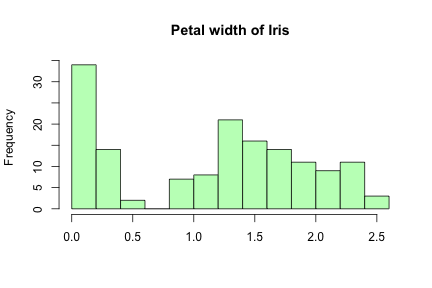
- Continued on next slide
Data structures: 2. Data frames
Data frame indexing: logical
logi <- petal > 1 # which petal widths are greater than 1?
head(logi)
## [1] FALSE FALSE FALSE FALSE FALSE FALSE
iris.subset <- iris[logi, ] # subset of iris only including individuals where petal width is greater than 1
head(iris.subset)
## Sepal.Length Sepal.Width Petal.Length Petal.Width Species
## 51 7.0 3.2 4.7 1.4 versicolor
## 52 6.4 3.2 4.5 1.5 versicolor
## 53 6.9 3.1 4.9 1.5 versicolor
## 54 5.5 2.3 4.0 1.3 versicolor
## 55 6.5 2.8 4.6 1.5 versicolor
## 56 5.7 2.8 4.5 1.3 versicolor
This is the same as:
iris[iris$Petal.Width > 1, ]
Try It!
Why is
iris[iris > 3, ]a nonsensical command?What about
iris[iris$Sepal.Length > 3]?Create a histogram of petal lengths for the entire data.
Subset the data for petal lengths greater than two.
Create a histogram of your new data.
Data structures: 2. Data frames
Data frame indexing: logical
- For all types of data, if we want to subset a specific value/character/factor we use the logical operator "
=="
iris.subset <- iris[iris$Petal.Length == 4,]
head(iris.subset)
## Sepal.Length Sepal.Width Petal.Length Petal.Width Species
## 54 5.5 2.3 4 1.3 versicolor
## 63 6.0 2.2 4 1.0 versicolor
## 72 6.1 2.8 4 1.3 versicolor
## 90 5.5 2.5 4 1.3 versicolor
## 93 5.8 2.6 4 1.2 versicolor
Data structures: 2. Data frames
Data frame indexing: logical
Subset only records from the species I. versicolor
Note that quotation marks are needed when dealing with characters and factors
versicolor.only <- iris[iris$Species == "versicolor", ]
head(versicolor.only)
## Sepal.Length Sepal.Width Petal.Length Petal.Width Species
## 51 7.0 3.2 4.7 1.4 versicolor
## 52 6.4 3.2 4.5 1.5 versicolor
## 53 6.9 3.1 4.9 1.5 versicolor
## 54 5.5 2.3 4.0 1.3 versicolor
## 55 6.5 2.8 4.6 1.5 versicolor
## 56 5.7 2.8 4.5 1.3 versicolor
Data structures: 2. Data frames
Data frame indexing: logical
- It's also possible to combine logical statments:
- Use
&(AND) if you want both statements to be true. - Use
|(OR) if you want either statement to be true.
- Use
versicolor.4 <- iris[iris$Petal.Length > 4 & iris$Species == "versicolor", ] # subset of observations or only I. versicolor where petal length is greater than 4
head(versicolor.4)
## Sepal.Length Sepal.Width Petal.Length Petal.Width Species
## 51 7.0 3.2 4.7 1.4 versicolor
## 52 6.4 3.2 4.5 1.5 versicolor
## 53 6.9 3.1 4.9 1.5 versicolor
## 55 6.5 2.8 4.6 1.5 versicolor
## 56 5.7 2.8 4.5 1.3 versicolor
## 57 6.3 3.3 4.7 1.6 versicolor
Try It!
Explain in words each of the following logical statements
iris[1:4, ]iris[c(1:15), c(1, 3)]iris[iris$Species == "setosa", "Petal.Width"]What happens when you add a
!before a logical statment? Hint: Compareiris[iris$Species == "setosa", ]andiris[!iris$Species == "setosa", ].
Data structures: 2. Data frames
Build a data frame from scratch
- Use the
data.framefunction.
df <- data.frame(x = 1:5, y = 6:2)
df
## x y
## 1 1 6
## 2 2 5
## 3 3 4
## 4 4 3
## 5 5 2
Data structures: 2. Data frames
Add columns to data frames
- Use the
data.framefunction (again).
df <- data.frame(df, z = 41:45) # adding new column z to previous df
df
## x y z
## 1 1 6 41
## 2 2 5 42
## 3 3 4 43
## 4 4 3 44
## 5 5 2 45
- Or, use the assignment operator
<-with the$notation
df$z <- 41:45
df
## x y z
## 1 1 6 41
## 2 2 5 42
## 3 3 4 43
## 4 4 3 44
## 5 5 2 45
Data structures: 2. Data frames
Remove columns from data frames
- Use the - symbol and the positional index
df.subset <- df[, -3]
df.subset
## x y
## 1 1 6
## 2 2 5
## 3 3 4
## 4 4 3
## 5 5 2
- Or, assign
NULLto the column (using assignment operator<-and the$notation)
df$z <- NULL
df
## x y
## 1 1 6
## 2 2 5
## 3 3 4
## 4 4 3
## 5 5 2
Data structures: 3. Matrices
Similar to data frames, matrices are two-dimensional. However, they can only consist of numbers (not characters or factors).
Why do you need them? Some functions (e.g. matrix algebra) require a matrix as an input.
a <- matrix(1:9, ncol = 3, nrow = 3)
a
## [,1] [,2] [,3]
## [1,] 1 4 7
## [2,] 2 5 8
## [3,] 3 6 9
b <- as.data.frame(a) # convert matrix to df
diag(b) # function fails with df
## Error in diag(b): (list) object cannot be coerced to type 'double'
diag(a) # works with matrix
## [1] 1 5 9
Data structures: 3. Matrices
- Indexing is the same as with data frames
a <- matrix(1:9, ncol = 3, nrow = 3)
a
## [,1] [,2] [,3]
## [1,] 1 4 7
## [2,] 2 5 8
## [3,] 3 6 9
a[2, 2]
## [1] 5
a[2, ]
## [1] 2 5 8
Importing your own data
R is not a spreadsheet program, so it's not great for direct data entry. It's best to start with spreadsheets for data entry and storage, and to import spreadsheets into R for data visualization and analysis.
.csv (comma separated values) files are often the preferred format to import into R.
Before we do that, we will need to consider working directories.
Working directory
- Find out what your current working directory is
getwd()
## [1] "/Users/nicolekinlock/Documents/Biometry TA/R Mini Course/slides/Rminicourse"
- This is the folder on your computer where R will look to open or write files.
Working directory
- Set your working directory
setwd("/Users/nicolekinlock/Documents/Biometry TA/")
Importing your own data
- Load the downloaded seedling data to your environment
seedlings <- read.csv("/Users/nicolekinlock/Documents/Biometry TA/R Mini Course/data/seedlings.csv")
head(seedlings)
R Tip: Variable names
- One of the largest sources of frustration with R can be importing data. Variable names, e.g. column names in a spreadsheet, often cause problems.
- Do not have spaces in variable names
- Abbreviate when appropriate
- Do not have spaces in variable names
Average Height # BAD - this won't work
Average.Height, Average_Height, average.height, average_height, averageHeight # BETTER - these will work, but will be slow to type repeatedly
avg.height, avg_height, avgHeight # GOOD!
Try It!
- Import the data frame seedlings.csv and load it to your environment. Store it as an object,
seedlings. - What is the mean height for all seedlings? What about the mean height for all seedlings except Rhus typhina?
- What is the difference in the mean height for Rosa multiflora seedlings and Rubus occidentalis seedlings?
Exporting data frames
- After you've made changes (done subsetting, etc.), you may want to export the altered data frame.
# write the file
write.csv(iris, file = "iris.csv", row.names = FALSE)
# check in your working directory for the new file
list.files()
Helpful link
Practice
Part 4: Looping and vectorization
Back to the directory
For loops
Loops are an important programming tool. The first loop we will learn is a for loop.
For loops run for a certain number of steps (iterations) that you define, during which any statements in the loop are executed.
-The basic syntax is:
for (i in 1:number_of_iterations) {
execute these statements
}
For loops
Why use a for loop?
We have a repeated process with indentical formatting, but different values.
To avoid laborious typing into R
For loops
Our first loop
for (i in 1:5) {
- i starts at 1. R will execute some statements;
- i is increased to i = 2 and statements are executed again;
- i is increased to i = 3 and statements are executed again;
- and so on, until i = 5, at which point the loop executes the set of statements for the last time.
}
For loops
Our first loop
for (i in 1:5) {
print(i)
}
## [1] 1
## [1] 2
## [1] 3
## [1] 4
## [1] 5
For loops
Syntax
Be sure you distinguish between:
- curly braces { }
- parentheses ( )
- square brackets [ ]
For loops
Syntax
Brackets [ ] are used to access elements of vectors, matrices, and data frames. The number of dimensions in the data structure is very important.
x <- 1:10 # vector
x[6] # vectors have one dimension
## [1] 6
x[c(2, 6, 9)]
## [1] 2 6 9
m <- matrix(data = seq(0.1, 10, .1), nrow = 10, ncol = 10) # matrix
m[6, 6] # matrices have two dimensions
## [1] 5.6
m[6, ]
## [1] 0.6 1.6 2.6 3.6 4.6 5.6 6.6 7.6 8.6 9.6
For loops
Syntax
Parentheses ( ) are used to specify arguments to functions.
x <- 1:10
sum(x)
## [1] 55
mean(x)
## [1] 5.5
For loops
Syntax
Finally, use curly braces { } to enclose all of the statements to be executed in a loop.
for (i in 1:3) {
print(i)
}
## [1] 1
## [1] 2
## [1] 3
For loops
Using a for loop
You can perform operations on i.
for (i in 1:4) {
print(i^2)
}
## [1] 1
## [1] 4
## [1] 9
## [1] 16
For loops
Using a for loop
Assignments can occur in a loop.
x <- 2
for (i in 1:4) {
x <- x^2
print(x)
}
## [1] 4
## [1] 16
## [1] 256
## [1] 65536
Note: i is not directly called in this loop, unlike in the previous ones.
The operation x <- x^2 will be done four times. x changes with each iteration because of the re-assignment in the loop.
Try It!
Create a for loop that prints numbers 1 to 100.
Create a for loop that prints numbers 100 to 1.
Create a for loop that adds 1 to numbers 1:5.
Create a for loop that divides all even numbers from 0 to 20 by 10 (consider using
seq()).Bonus! What would be the final value here (without trying it)? Why?
dogs <- 10
for (i in 1:5) {
dogs <- dogs + 1
}
For loops
For loops and vectors
In the above examples, we used i directly in mathematical operations. It is more common to loop over elements of a vector to accomplish some particular task.
nameVector <- c("Harry", "Hermione", "Ron")
for (i in 1:length(nameVector)) {
print(paste("Hi,", nameVector[i], sep = " "))
}
## [1] "Hi, Harry"
## [1] "Hi, Hermione"
## [1] "Hi, Ron"
For loops
What did that really do?
- Consider the loop in pieces, here just for
i = 1
length(nameVector) # the # of positions in nameVector
## [1] 3
nameVector[1] # the 1st position in nameVector
## [1] "Harry"
# combine text and index of a vector
paste("Hi,", nameVector[1], sep = " ")
## [1] "Hi, Harry"
For loops
What did that really do?
Loops exist in their own enclosed environment, so use print() to view them on your console so you can see the output of each iteration.
nameVector <- c("Harry", "Hermione", "Ron")
for (i in 1:length(nameVector)) {
print(paste("Hi,", nameVector[i], sep = " "))
}
## [1] "Hi, Harry"
## [1] "Hi, Hermione"
## [1] "Hi, Ron"
Without print() or an assignment <- results are not returned.
nameVector <- c("Harry", "Hermione", "Ron")
for (i in 1:length(nameVector)) {
paste("Hi,", nameVector[i], sep = " ")
}
Try It!
Create a vector of the days of the week and generate a message that says "Today is x" using a loop.
Explain why the following code is wrong:
for (x in 1:10) {
print(sum(i))
}
Data structures: 4. Lists
Lists are another of the 5 basic data structures in R. Lists, like vectors, are one dimensional.
The elements of a vector must all be the same type. In this example, 1 and 2 are converted to characters because "blue" is included.
x <- c(1, 2, "blue")
x
## [1] "1" "2" "blue"
typeof(x)
## [1] "character"
Data structures: 4. Lists
- In contrast, the elements of a list can be any type (numeric, integer, logical, character), or other lists.
a <- list(numeric = seq(0, 0.25, 0.01), integer = 10:20, logical = c(TRUE, FALSE, FALSE), character = c("open", "closed", "closed", "open"))
a
## $numeric
## [1] 0.00 0.01 0.02 0.03 0.04 0.05 0.06 0.07 0.08 0.09 0.10 0.11 0.12 0.13
## [15] 0.14 0.15 0.16 0.17 0.18 0.19 0.20 0.21 0.22 0.23 0.24 0.25
##
## $integer
## [1] 10 11 12 13 14 15 16 17 18 19 20
##
## $logical
## [1] TRUE FALSE FALSE
##
## $character
## [1] "open" "closed" "closed" "open"
- It may seem multidimensional, but it does behave as a one dimensional data structure.
Data structures: 4. Lists
Constructing lists and list syntax
- You can construct a list with
list()(compare withc()for vectors)
x <- c(1, 2, 3, 4, 5)
y <- c(3, 6, 8, 10)
v <- c(x, y) # create a vector
str(v)
## num [1:9] 1 2 3 4 5 3 6 8 10
l <- list(x, y) # create a list
str(l)
## List of 2
## $ : num [1:5] 1 2 3 4 5
## $ : num [1:4] 3 6 8 10
v[2] # index a vector
## [1] 2
l[[2]] # index a list
## [1] 3 6 8 10
Data structures: 4. Lists
List indexing
Using the single bracket indexing operator
[]will return a listUsing a double bracket indexing operator
[[]]will return contents within a list (integers, numbers, characters)The main difference is in the class of the output
b <- list(1:4, c(3.25, 6.75, 8.175, 4.5), c("apples", "bananas", "oranges", "pears"))
b[2] # returns a list
## [[1]]
## [1] 3.250 6.750 8.175 4.500
str(b[2])
## List of 1
## $ : num [1:4] 3.25 6.75 8.18 4.5
b[[2]] # returns numbers from list
## [1] 3.250 6.750 8.175 4.500
str(b[[2]])
## num [1:4] 3.25 6.75 8.18 4.5
Data structures: 4. Lists
List indexing
b[1] * b[2] # can't do arithmatic on lists
## Error in b[1] * b[2]: non-numeric argument to binary operator
b[[1]] * b[[2]] # can do arithmatic on numbers
## [1] 3.250 13.500 24.525 18.000
- In order to reference a single list element directly, we have to use the double square bracket
[[ ]]operator and the single bracket[]operator.
b[[2]] # 2nd element of list
## [1] 3.250 6.750 8.175 4.500
b[[2]][2] # 2nd element of 2nd element of list
## [1] 6.75
How do we save loop outputs?
- Instead of printing to the screen, we usually want to create a new object with the outputs on the loop.
- To do this, you need to create a blank vector or list before the loop
outputs <- c() # create a blank vector
x <- rnorm(n = 10, mean = 1, sd = 0.5) # vector that we will use in the loop
for (i in 1:length(x)) {
outputs[i] <- x[i] * 10
}
outputs
## [1] 6.029596 13.761718 10.922449 14.737241 6.798512 6.913397 1.505247
## [8] 8.059382 7.972717 7.948766
Try It!
First, create a vector, y, with 10 random samples from a standard normal distribution (mean = 0, sd = 1).
Compute
y[i] * 2for 10 iterations (the length of vector y) using a for loop with index i. Place the output in a vector.Compute
y[i] * 2for 10 iterations using a for loop. Place the output in a list.Find the the 4th element in the output vector from question 1 and the output list from question 2.
What do each of these loops do?
output <- list()
for (x in 1:10) {
output[x] <- sum(x + x^2)
}
output2 <- list()
for (x in 1:11) {
output2[x + 1] <- sum(x + x^2)
}
Flow Statements
if statements
if (3 > 2) {
print("Yes")
}
## [1] "Yes"
Flow Statements
if statements
Often, we want for loops to be able to do different things under different conditions. We want the for loop to account for variables, options, and logical statements.
Let's use an if statement:
x <- 1:5
for (i in 1:length(x)) {
if (x[i] > 3) {
print(paste(x[i],"is greater than 3"))
}
if (x[i] <= 3) {
print(paste(x[i],"is less than or equal to 3"))
}
}
## [1] "1 is less than or equal to 3"
## [1] "2 is less than or equal to 3"
## [1] "3 is less than or equal to 3"
## [1] "4 is greater than 3"
## [1] "5 is greater than 3"
Flow Statements
Controlling flow: else statements
- If statements are often paired with else statements, used when we want to run specific code in a given case and the same code for every other possible case.
x <- rpois(100, lambda = 2)
output <- c()
for (i in 1:length(x)) {
if (x[i] == 0) { # execute the code in this if statement in one special case
next
} else { # for every other case, execute this code
output[i] <- x[i]^2
}
}
output
## [1] 4 1 1 4 NA 4 9 49 16 4 1 16 4 NA 1 NA 4
## [18] 4 NA NA 4 1 4 1 NA 4 1 4 49 1 16 9 NA 16
## [35] 4 9 4 4 9 9 4 25 NA 4 1 4 4 9 1 4 4
## [52] 16 1 4 4 100 1 1 NA NA 4 1 4 4 16 1 36 1
## [69] 4 4 NA 4 NA 4 16 NA 36 4 9 4 NA 9 9 1 1
## [86] 1 9 1 NA 9 25 4 4 9 NA 16 NA 1 1 9
Flow Statements
Controlling flow: break statements
- Sometimes we want the loop to end if certain logical criteria are met. We can end a loop running based on an if and break statement
for (i in 1:length(x)) {
if (x[i] > 3){
break
}
if (x[i] <= 3) {
print(paste(x[i],"is less than or equal to 3"))
}
}
## [1] "2 is less than or equal to 3"
## [1] "1 is less than or equal to 3"
## [1] "1 is less than or equal to 3"
## [1] "2 is less than or equal to 3"
## [1] "0 is less than or equal to 3"
## [1] "2 is less than or equal to 3"
## [1] "3 is less than or equal to 3"
Flow Statements
Controlling flow: next statements
Sometimes we don't want to break the statement, just skip a troublesome object or R that we know will cause an error.
We can continue within a loop based on an if and next statement. Here we want to skip 4.
for (i in 1:length(x)) {
if (x[i] == 4) {
next
}
if (x[i] > 3) {
print(paste(x[i],"is greater than 3"))
}
if (x[i] <= 3) {
print(paste(x[i],"is less than or equal to 3"))
}
}
## [1] "2 is less than or equal to 3"
## [1] "1 is less than or equal to 3"
## [1] "1 is less than or equal to 3"
## [1] "2 is less than or equal to 3"
## [1] "0 is less than or equal to 3"
## [1] "2 is less than or equal to 3"
## [1] "3 is less than or equal to 3"
## [1] "7 is greater than 3"
## [1] "2 is less than or equal to 3"
## [1] "1 is less than or equal to 3"
## [1] "2 is less than or equal to 3"
## [1] "0 is less than or equal to 3"
## [1] "1 is less than or equal to 3"
## [1] "0 is less than or equal to 3"
## [1] "2 is less than or equal to 3"
## [1] "2 is less than or equal to 3"
## [1] "0 is less than or equal to 3"
## [1] "0 is less than or equal to 3"
## [1] "2 is less than or equal to 3"
## [1] "1 is less than or equal to 3"
## [1] "2 is less than or equal to 3"
## [1] "1 is less than or equal to 3"
## [1] "0 is less than or equal to 3"
## [1] "2 is less than or equal to 3"
## [1] "1 is less than or equal to 3"
## [1] "2 is less than or equal to 3"
## [1] "7 is greater than 3"
## [1] "1 is less than or equal to 3"
## [1] "3 is less than or equal to 3"
## [1] "0 is less than or equal to 3"
## [1] "2 is less than or equal to 3"
## [1] "3 is less than or equal to 3"
## [1] "2 is less than or equal to 3"
## [1] "2 is less than or equal to 3"
## [1] "3 is less than or equal to 3"
## [1] "3 is less than or equal to 3"
## [1] "2 is less than or equal to 3"
## [1] "5 is greater than 3"
## [1] "0 is less than or equal to 3"
## [1] "2 is less than or equal to 3"
## [1] "1 is less than or equal to 3"
## [1] "2 is less than or equal to 3"
## [1] "2 is less than or equal to 3"
## [1] "3 is less than or equal to 3"
## [1] "1 is less than or equal to 3"
## [1] "2 is less than or equal to 3"
## [1] "2 is less than or equal to 3"
## [1] "1 is less than or equal to 3"
## [1] "2 is less than or equal to 3"
## [1] "2 is less than or equal to 3"
## [1] "10 is greater than 3"
## [1] "1 is less than or equal to 3"
## [1] "1 is less than or equal to 3"
## [1] "0 is less than or equal to 3"
## [1] "0 is less than or equal to 3"
## [1] "2 is less than or equal to 3"
## [1] "1 is less than or equal to 3"
## [1] "2 is less than or equal to 3"
## [1] "2 is less than or equal to 3"
## [1] "1 is less than or equal to 3"
## [1] "6 is greater than 3"
## [1] "1 is less than or equal to 3"
## [1] "2 is less than or equal to 3"
## [1] "2 is less than or equal to 3"
## [1] "0 is less than or equal to 3"
## [1] "2 is less than or equal to 3"
## [1] "0 is less than or equal to 3"
## [1] "2 is less than or equal to 3"
## [1] "0 is less than or equal to 3"
## [1] "6 is greater than 3"
## [1] "2 is less than or equal to 3"
## [1] "3 is less than or equal to 3"
## [1] "2 is less than or equal to 3"
## [1] "0 is less than or equal to 3"
## [1] "3 is less than or equal to 3"
## [1] "3 is less than or equal to 3"
## [1] "1 is less than or equal to 3"
## [1] "1 is less than or equal to 3"
## [1] "1 is less than or equal to 3"
## [1] "3 is less than or equal to 3"
## [1] "1 is less than or equal to 3"
## [1] "0 is less than or equal to 3"
## [1] "3 is less than or equal to 3"
## [1] "5 is greater than 3"
## [1] "2 is less than or equal to 3"
## [1] "2 is less than or equal to 3"
## [1] "3 is less than or equal to 3"
## [1] "0 is less than or equal to 3"
## [1] "0 is less than or equal to 3"
## [1] "1 is less than or equal to 3"
## [1] "1 is less than or equal to 3"
## [1] "3 is less than or equal to 3"
Try It!
First, create a vector, x, with all integers between 1 and 100.
Create a for loop that computes
x[i] * 2for 100 iterations (the length of vectorx). Place the output in a vector. However, calculatex[i] * 3whenx[i] = 32.Create a for loop that computes
x[i] * 2for 100 iterations. Place the output in a list. However, break the loop after 51 iterations.Create a for loop that computes
x[i] * 2for 100 iterations. Place the output in a vector. However, skipx = 71, 74.
Alternatives to for loops: the apply family
The apply family of functions allows you to process whole rows, columns, or lists. This is called vectorization. This can replace for loops (and is often faster).
apply()
apply(matrixname, margin = c(1,2), function = FunctionName)margin = 1apply function to rows of matrix;margin = 2apply to columns of matrix;margin = c(1,2)apply to rows and columns of matrixapply(M, 2, fun)= apply fun to the columns of M
apply()
- Use
apply()to take the median of the rows/columns of matrix M.
M <- matrix(rnorm(9), ncol = 3, nrow = 3)
M
## [,1] [,2] [,3]
## [1,] -0.9195574 -0.003817313 -0.5123387
## [2,] 0.5537405 0.167823085 -0.3541061
## [3,] 1.0229264 -0.103687892 -0.4194641
apply(M, 1, median) # median of rows
## [1] -0.5123387 0.1678231 -0.1036879
apply(M, 2, median) # median of columns
## [1] 0.553740512 -0.003817313 -0.419464060
apply()
- The same analysis, but using a for loop
med.M <- c()
for (i in 1:3) {
med.M[i] <- median(M[, i])
}
med.M
## [1] 0.553740512 -0.003817313 -0.419464060
The apply family
- Other versions of
apply()for other data types:lapply()tapply()sapply()vapply()mapply()
The apply family
- Other versions of
apply()are used for other data types. For examplelapply()uses lists as input.
mylist <- list(1:3, c(1.4, 4.6, 4.2, 2.1), rnorm(4)) # make a list
mylist
sum(mylist) # returns an error
lapply(mylist, sum) # applies function to each element in the list
Useful links
Practice
Part 5: Functions
Back to the directory
Functions in R: Base
Functions contain sets of instructions that we want to carry out repeatedly
We have already seen many of the basic functions that come pre-installed with R.
sum(seq(1, 100, 1))
abs(-100 + 50)
dim(iris)
str(iris)
colnames(iris)
Functions in R: Packages
- We have also seen functions that are loaded from packages.
# this will not run. tree is not loaded
tree(formula = Species ~ . -Species, data = iris)
install.packages("tree") # install package
library(tree) # load package
# now it should work
tree(formula = Species ~ . -Species, data = iris)
Functions in R: Make your own!
It is also possible to define your own functions. This is especially important if you are going to write the same lines of code over and over again.
- R functions are objects just like anything else.
- By default, R function arguments are lazy, i.e. they're only evaluated if they're actually used.
- Every call on a R object is almost always a function call.
Basic components of a function
- The
body(), the code inside the function. - The
formals(), the "formal" argument list, which controls how you can call the function. - The
environment(), which determines how variables referred to inside the function are found. args()to list arguments.
Writing functions
FunctionName <- function(arguments) {body}
# define a function, f
f <- function(x, y) {
x + y
}
# call function f
f(x = 1, y = 3)
## [1] 4
Functions and the environment
Variables defined inside functions exist in a different environment than the global environment, i.e. they don't exist outside of the function.
However, if a variable is not defined inside a function, the function will look one level above.
If you run this function, you'll see that
ydoes not pop up in your environment panel.
x <- 2 # variable defined outside the function
g <- function() {
y <- 1 # variable defined inside the function
c(x, y)
}
g() # function g looks for x one level above (in global environment)
## [1] 2 1
Function basics
- Unless you use the function
return()or write the output at the end of the function, you won't be able to access the output
f1 <- function(a, b) {
x <- a + b
y <- (a + b)^2
z <- a/b
}
f1(1, 2) # doesn't return anything
f2 <- function(a, b) {
x <- a + b
y <- (a + b)^2
z <- a/b
c(x, y, z) # same result as writing return(c(x, y, z))
}
f2(1, 2) # returns x, y, and z
## [1] 3.0 9.0 0.5
Try It!
Create a function that takes in two arguments,
xandy, and computesx * 2 * y.Create a function that takes in three arguments, and makes a vector from the result.
Create a function that counts the number of matching elements in two separate vectors. Hint: use
%in%to create a logical statement.
Function basics
- Arguments can be passed to a function as a vector or a list
params <- c(5, 25)
params
## [1] 5 25
f3 <- function(p) {
alpha <- p[1]
beta <- p[2]
alpha * beta
}
f3(params)
## [1] 125
Functions with pre-defined values
subtract <- function(a = 5, b = 2) {
return(a - b)
}
subtract()
## [1] 3
subtract(3, 6)
## [1] -3
Try It!
Write a function that takes a vector as an argument and multiplies the sum of the vector by 10. Return a logical statement based on whether the sum is under 1000.
Write a function that calculates the mean of every column in a dataframe. Code the function so that it does not evaluate the column mean if the column elements are not numbers, using
class(x) != "numeric". Try your function on theirisdataset.
Try It!
f4 <- function(x) {
output <- c()
for (i in 1:ncol(x)) {
if(class(x[, i]) != "numeric") {
output[i] <- NA
}
if(class(x[, i]) == "numeric") {
output[i] <- mean(x[, i])
}
}
names(output) <- colnames(x)
return(output)
}
f4(iris)
## Sepal.Length Sepal.Width Petal.Length Petal.Width Species
## 5.843333 3.057333 3.758000 1.199333 NA
Helpful links
Practice
Part 6: Data visualization using ggplot2
Back to the directory
Review
ggplot2 is not a base package, so we need to install it.
How would you install the package
ggplot2?What is the next step before you can use a function from
ggplot2?
Install and load ggplot2
install.packages("ggplot2")
library(ggplot2)
Why ggplot2?
- The way you write code in
ggplot2makes a lot more sense compared to base graphics - Easier to create visually appealing figures
- Useful for exploring trends in your data
Why ggplot2?
plot(x = iris$Species, y = iris$Sepal.Length)

library(ggplot2)
ggplot(data = iris, aes(x = Species, y = Sepal.Length)) + geom_boxplot() + theme_classic()

Why gg?
ggstands for "grammar of graphics"Uses a set of terms that defines the basic components of (every) plot
Produce figures using coherent, consistent syntax (very similar code for very different figures)
- However, this syntax does vary quite a bit from typical R syntax!
- If you are a little confused by the syntax at first, that probably just means that you are getting more comfortable with the R language
The grammar
- A basic
ggplot2plot consists of:data: Must be a data frameaes(thetics): How your data are represented visually (x, y, color, size, shape, etc.)geom(etry): What type of geometric objects you want to display (points, lines, polygons, etc.)
A basic plot
library(ggplot2)
ggplot(data = iris, aes(x = Sepal.Length, y = Sepal.Width)) + geom_point()
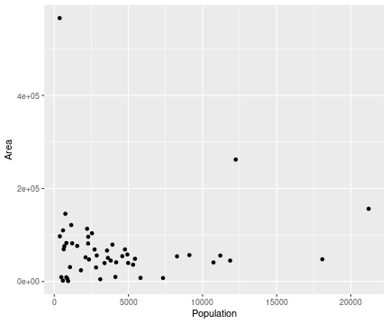
Plots can be assembled in pieces
Useful for exploring data in different ways
I'll be using variables from the
state.x77andstate.regiondatasets (US state data from 1977)
state <- data.frame(state.x77, state.region, state.abb)
stateplot <- ggplot(data = state, aes(x = Population, y = Area))
stateplot + geom_point()
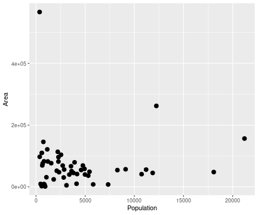
Aesthetics
Increase the size of points (size argument within geom_point())
ggplot(data = state, aes(x = Population, y = Area)) + geom_point(size = 3)
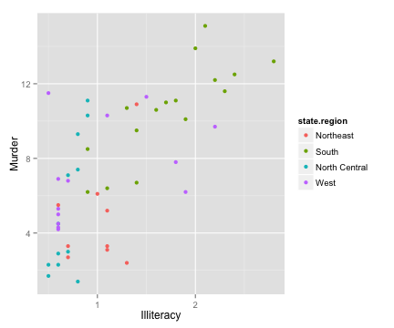
Aesthetics
- Differentiate state region by color (
colorargument withinaes())
ggplot(data = state, aes(x = Illiteracy, y = Murder, color = state.region)) + geom_point(size = 2)
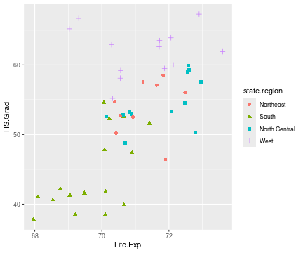
Aesthetics
- Differentiate state region by color and shape (
shapeargument withinaes())
ggplot(data = state, aes(x = Life.Exp, y = HS.Grad, color = state.region, shape = state.region)) + geom_point(size = 2)

Try It!
- Take a sample from the
diamondsdataset
d2 <- diamonds[sample(1:nrow(diamonds), 1000), ]
- Then generate this plot:
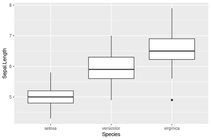
Other geometric objects
Type geom_ and hit tab to see them all. Then, use ?geom_nameofgeom to see the help screen.
Other geometric objects
Boxplot
ggplot(iris, aes(x = Species,y = Sepal.Length)) + geom_boxplot()
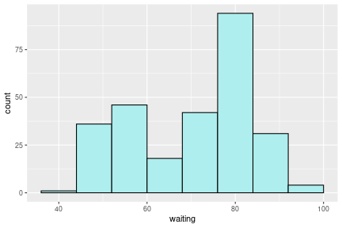
Other geometric objects
Histograms
- Change some of the aesthetics -
binwidth,fill
ggplot(faithful, aes(x = waiting)) + geom_histogram(binwidth = 8, color = "black", fill = "paleturquoise")
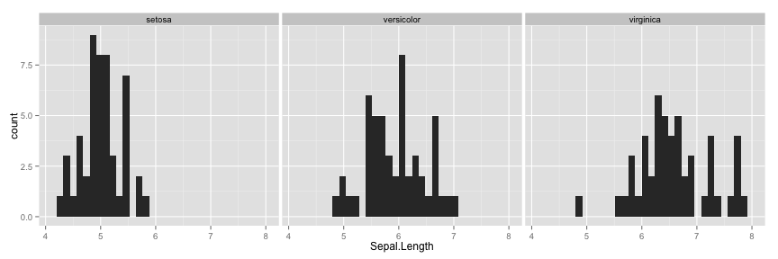
Other geometric objects
Bar plots
ggplot(iris, aes(x = Species, y = Sepal.Length)) + geom_bar(stat = "identity")
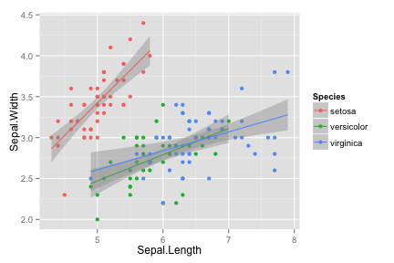
Other geometric objects
Line plots
ggplot(mtcars, aes(x = wt, y = mpg, color = as.factor(cyl))) + geom_line()
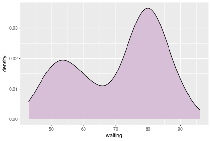
Other geometric objects
Density plots
ggplot(faithful, aes(waiting)) + geom_density(fill = "thistle")
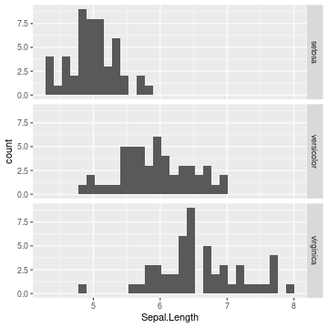
Try It!
Look up
geom_histogram. What does it do?Make a histogram of
Sepal.Lengthfrom theirisdata set. What did it do with the different species?
Facets
Plots can also have facets, which divide a plot into subplots based on some discrete variable (here, species). Syntax is facet_grid(Species ~ .), where there are as many rows as species and there is only one column (represented by the period).
ggplot(iris, aes(Sepal.Length)) + geom_histogram() + facet_grid(Species ~ .)
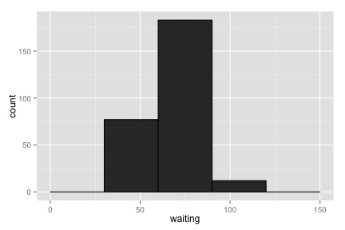
Facets
Change to facet_grid(. ~ Species) and get one row, three columns.
ggplot(iris, aes(Sepal.Length)) + geom_histogram() + facet_grid(. ~ Species)
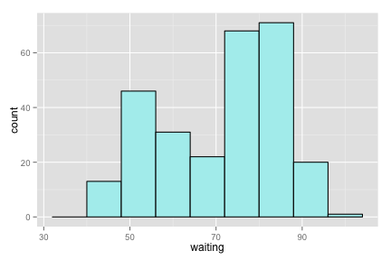
Stats
Type stat_ and hit tab to see them all. Then, use ?stat_nameofstat to see the help screen.
Stats
Use stat_smooth to add a linear fit
ggplot(iris, aes(x = Sepal.Length, y = Sepal.Width, color = Species)) + geom_point() + stat_smooth(method = "lm")
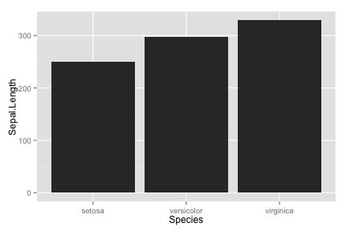
Scales
scalesare used to modify axes and colorsFor example:
scale_y_continuous()Set name, breaks, labels, limits of y-axisscale_x_log10()log transform the x-axisscale_colour_manual()Specify colors for geomsscale_fill_discrete()Specify colors for geoms
Scales
- log x and log y axes,
+ scale_x_log10()and+ scale_y_log10()
ggplot(data = state, aes(x = Population, y = Area, color = state.region)) + scale_y_log10() + scale_x_log10() + geom_point()
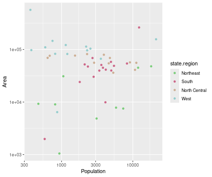
Scales
- Add color manually using
+ scale_colour_manual()
ggplot(data = state, aes(x = Population, y = Area, color = state.region)) + scale_y_log10() + scale_x_log10() + geom_point() + scale_colour_manual(values = c("palegreen3","palevioletred3","peachpuff3", "paleturquoise3"))
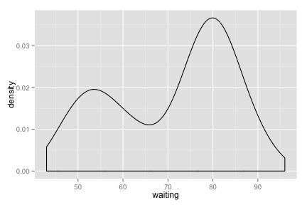
Labels
- Add labels, including a title and x and y axes labels, using
+ labs()
ggplot(data = state, aes(x = Life.Exp, y = HS.Grad, color = state.region, shape = state.region)) + geom_point(size = 2) + labs(title = "US States, 1977", x = "Life expectancy (in years)", y = "High school graduation rate (percent)")
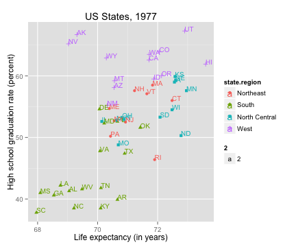
Labels
- Add labels inside the figure using
+ geom_text()
ggplot(data = state, aes(x = Life.Exp, y = HS.Grad, color = state.region, shape = state.region)) + geom_point(size = 2) + labs(title = "US States, 1977", x = "Life expectancy (in years)", y = "High school graduation rate (percent)") + geom_text(aes(label = state.abb, size = 2, hjust = 0, vjust = 0))
Themes
Control over the figure as a whole can be done by modifying themes. See
?themefor all of the optionsI prefer
+ theme_bw()(white background with gridlines) or+ theme_classic()(white background without gridlines)You can also change the overall font family and font size
ggplot(iris, aes(Species, Sepal.Length)) + geom_bar(stat = "identity") + theme_classic(base_family = "Helvetica", base_size = 14)

Saving plots
my_plot <- ggplot(iris, aes(Species, Sepal.Length)) + geom_bar(stat = "identity") + theme_bw()
ggsave("my_plot.jpg", my_plot, height = 4, width = 4, units = "in")
You can specify the file name, dimensions, resolution, etc.
Note: Saved in your current working directory (unless specified).
R Tip: ggplot2 takes data frames only
Data structure must be a data frame to plot with ggplot2
xvar <- rnorm(100)
yvar <- rnorm(100)
df <- data.frame(xvar, yvar) # coerce to data frame
ggplot(df, aes(xvar, yvar)) + geom_point()
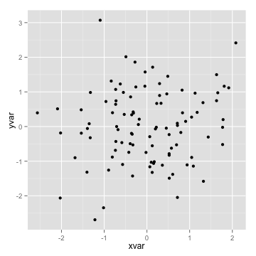
Try It!
Type in
data(package = "datasets")to see all of the datasets pre-installed with R.Find some data that interests you (or use your own) and examine its structure. Are they vectors, data frames, other? How many observations are there?
Use
ggplot2to make a plot of some attribute of the data.
Proper data formatting
- Often our data looks like this ("wide"), where multiple observations can be found in each row
head(df)
## spA spB spC spD
## 1 49.10396 68.27981 20.60649 25.39428
## 2 48.64058 74.72528 19.87461 25.42307
## 3 50.51679 74.40623 20.62008 25.50169
## 4 49.02538 77.22343 19.37961 24.08362
## 5 51.44201 67.03794 19.71196 23.91932
## 6 50.83038 74.95657 19.92310 25.78173
dim(df)
## [1] 100 4
Proper data formatting
- Data is much easier to analyze visually and statisically if it looks like this ("long"), where there is one row per observation
head(df2)
## species weight
## 1 A 76.16731
## 2 B 72.32543
## 3 C 77.33441
## 4 D 76.44599
## 5 A 82.26476
## 6 B 73.12404
dim(df2)
## [1] 400 2
Melting: from wide to long
# make some fake "wide" data
df <- data.frame(A = rnorm(100, 50, 6), B = rnorm(100, 75, 5), C = rnorm(100, 50, 4), D = rnorm(100, 55, 3))
head(df)
## A B C D
## 1 50.73795 71.54831 56.72058 55.50035
## 2 54.38796 76.96641 50.84828 54.08178
## 3 38.34681 75.33919 51.58912 54.43482
## 4 53.64221 75.24042 47.13779 55.63801
## 5 46.89473 70.01894 44.45489 51.73413
## 6 57.43555 68.72379 51.50239 53.52847
Melting: from wide to long
- Use the
melt()function inreshape2package
library(reshape2)
df2 <- melt(data = df)
## No id variables; using all as measure variables
head(df2)
## variable value
## 1 A 50.73795
## 2 A 54.38796
## 3 A 38.34681
## 4 A 53.64221
## 5 A 46.89473
## 6 A 57.43555
dim(df2)
## [1] 400 2
Melting: from wide to long
- Melting the data makes it easier to plot
ggplot(df2, aes(x = value)) + geom_histogram() + facet_grid(. ~ variable)
FALSE `stat_bin()` using `bins = 30`. Pick better value with `binwidth`.
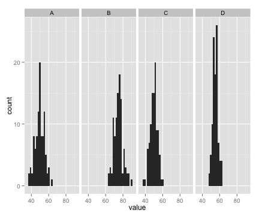
Helpful links
Practice
Additional topics and links
- When you get a bit more comfortable with R, I recommend taking a look at the additional material on Mike McCann's website.
Reproducible Research with RMarkdown
Advanced Data Manipulation with dplyr
- I also recommend creating a GitHub account (where I've uploaded this course). GitHub is used for making code freely available as well as for version control (important for collaborating on projects)
Basic tutorial on using GitHub (with RStudio)
GitHub tutorial (using command line)